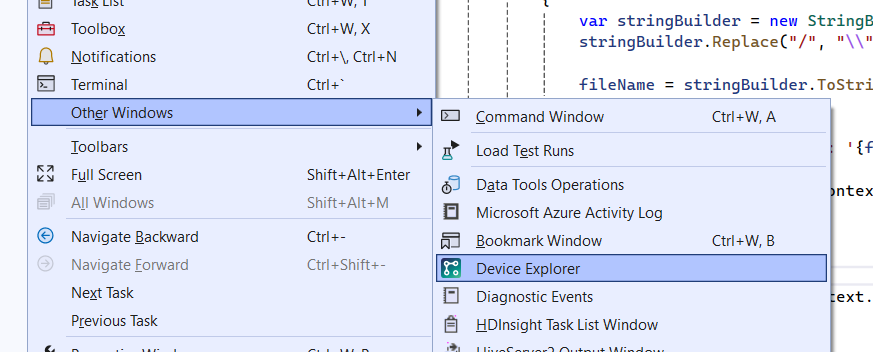
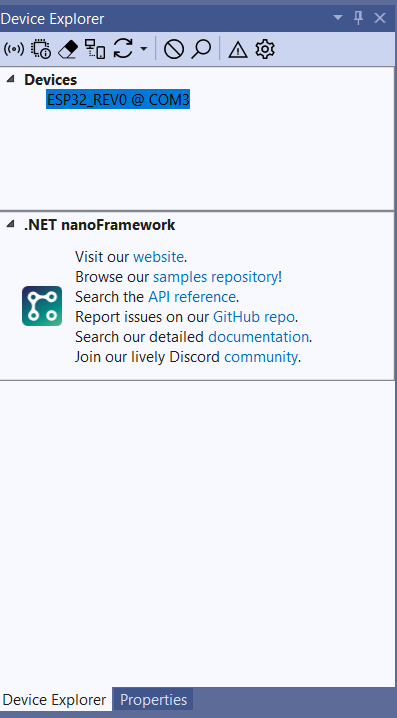
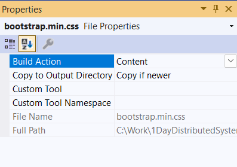
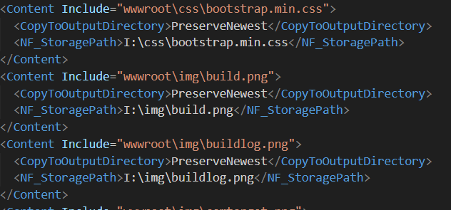
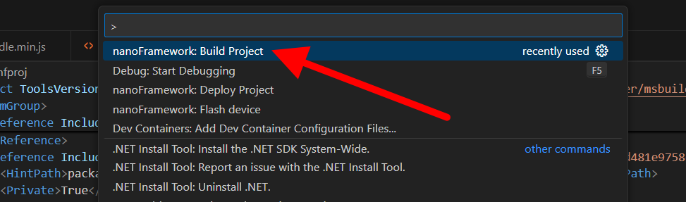
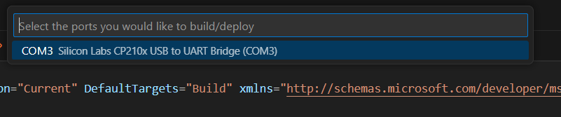

Exercise 1:
Deploy an application
Deploying with Visual Studio
Deploying a NanoFramework application from Visual Studio is typically easy and involves only a few steps:
- Make sure the correct device is selected in the extension
- Make sure content files are set to copy
- F5 to run the application
1. Make sure the correct device is selected
The NanoFramework extension for Visual Studio adds a
Device Explorer window with lists any compatible ESP32 devices that are connected
to the computer. To open the window, go to View -> Other Windows -> Device Explorer.

Once this window is open, it will list all compatible devices connected to the computer (in this case, there should only be one). Select the
device you wish to flash. In the example below, the device is connected to
COM3 and is an ESP32_REV0 image.

2. Set content files to Copy Always
If there are any content files (e.g. html, js, css, or images) that need to be deployed along with the application, their
Build Action
must be set to Content and the Copy to Ouput Directory setting must be set to Always or
Copy if newer.

The build action will copy the files to the internal storage of the device, in the same folder path that they are in relative to the Visual Studio
solution. If you wish to change where the files are copied to, you can edit the
nfproj file to specify the destination location
for the file you are copying.

3. F5 to run the application
Your application is now ready to deploy. Hit F5 to deploy and debug your application. The Visual Studio extension will now compile
your application, deploy it to the selected device, and start debugging. You can use most Visual Studio debugging tools (e.g.
Breakpoints, Quick Watch, Watches, etc.)

4. Success!
If you managed to deploy everything successfully, you should see a new exercise waiting for you when you refresh this page!
Deploying with VSCode
There are 4 steps to deploying a NanoFramework application to a micro-controller like an ESP32 (which is what we are using during this workshop)
using the vscode add-on. At a summary, these steps are:
- Build the project
- Deploy the project
- Add all Content Files to a deploy.json
- Deploy the files
1. Build the application
Open the
Command Palette (Default shortcut is: CTRL + SHIFT + P) and search for nanoFramework: Build Project. Once found, run that command.
The build command will present you with a parameter, asking you which solution you would like to build. Select the
1.Deployment\Deployment.sln solution file.
The command will now compile the solution for you, getting it ready to deploy. The build log will look something like this:

Once complete, your solution will be built. Now you need to deploy it.
2. Deploy the application
Open the
Command Palette (Default shortcut is: CTRL + SHIFT + P) and search for nanoFramework: Deploy Project. Once found, run that command.
The command will ask you for a parameter, asking you for which solution to deploy. Select the
1.Deployment\Deployment.sln solution file.
The command will now ask you for a second parameter: which COM port to deploy to. Select the COM port that the device is plugged into.

Your solution will now be deployed to the device. The output should look something like this:

With your solution deployed, you now need to deploy the static files that will be served by the device's web server.
3. Add all content files to a deploy.json file
The json file must have a format similar to the following:
The
The
The drive used depends on the type of storage being used. If using the internal device storage, the drive is
{
"serialport":"COM3",
"files": [{
"DestinationFilePath": "I:\\filetoread.png",
"SourceFilePath": "filetoread.png"
}, {
"DestinationFilePath": "I:\\smallfiletoread.png",
"SourceFilePath": "smallfiletoread.png"
}]
}
where each file that must be copied to the device has a DestinationFilePath property and a SourceFilePath property.The
SourceFilePath property represents where the file that must be copied resides on your local disk. This is a path relative to where
the tool that copies the content files will run.
The
DestinationFilePath property is where the file must reside on the device. Subdirectories are supported.
The drive used depends on the type of storage being used. If using the internal device storage, the drive is
I:\\.
I:Internal storageD:SD CardE:USB storage
4. Deploy the content files
Deploying the content files is done by running a
Install the nanoff tool by running the command
Once
 >
Once the command has completed, your content files will be deployed on the device.
>
Once the command has completed, your content files will be deployed on the device.
nanoff dotnet tool.
Install the nanoff tool by running the command
dotnet tool install -g nanoff
Once
nanoff is installed, you can use it deploy content files by running: nanoff --filedeployment deploy.json where
deploy.json is the json file you made in step 3.
5. Success!
If you managed to deploy everything successfully, you should see a new exercise waiting for you when you refresh this page!